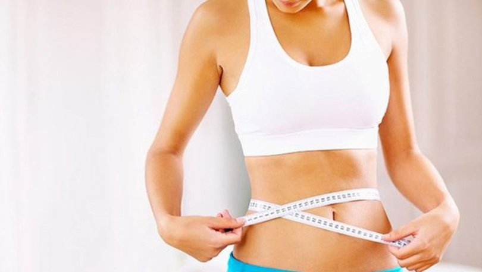

Kilo Vermek İçin Egzersiz Şart mı?
Sadece diyet yaparak kilo veremeyeceğinizi bilin. Gün içerisindeki hareketliliğiniz, yaptığınız egzersizler kilo vermenizde çok önemlidir. Yaşınız, metabolik durumunuz, genetik faktörler, hatta geçmişte yaptığınız diyetler kilo vermenizde rol oynar. Kilo vermeyi etkileyen bu kadar değişken faktör varken herkesin aynı hızda kilo vermesi beklenmez. Hipotiroidi, insülin direnci veya hipoglisemi öykünüz varsa kilo verme hızınızın nispeten düşük olması olasıdır; ancak metabolik bir rahatsızlığınız yoksa kilo vermek sanıldığı kadar zor değildir. Dört çeşit egzersiz tarzı bulunur. Bunlar kardiyovasküler, kuvvet egzersizleri, germe egzersizleri ve denge egzersizleridir. Koşmak, yürümek, ip atlamak, pedal çevirmek, kürek çekmek kardiyovasküler egzersizler arasında yer alır ve kilo vermede önemli oranda destek verir.
Kardiyovasküler sporlar kişinin kalp atım sayısını artırarak kilo vermeye ve yağ yakımına yardımcı olur. Kuvvet egzersizleri kişinin vücudundaki kas kitlesini artırmaya yarar. Germe egzersizleri sayesinde esnekliğin artmasına katkıda bulunulur. Denge egzersizleri ise vücudun dengesini bulmasına yardım eder. Sağlıklı olabilmek için dört egzersizi de dengeli olarak yapmak gerekir.
Hızlı Kilo Vermek Zararlı mıdır?
Kilo vermenin ilk yolu; kararlı olmak ve hedefleri gerçekçi koymaktan geçiyor. Verilen kiloların korunması ise yapılan davranış değişikliklerinin hayat boyu sürdürülmesine bağlı. Yüksek hedefler koymak, sabırsız olmak ve kısa sürede hızlı sonuç beklemek sadece stresinizi artırır, o hafta iki kilo verdiyseniz bile bunu başarısızlık olarak algılayıp motivasyonun düşmesine neden olur.
Hızlı kilo vermek adına kişinin kendisini aç bırakması, organizmanın normal işlev görmesi için gerekli enerji ve besin ögelerini sağlamada yetersiz kalmasına neden olur. Çok düşük kalori ile en başta kilo verilmeye başlansa da bu kilo kaybı su ve kastan kayıp olarak görünür ve bir süre sonra sıkıcı bir hale gelerek kişinin diyeti bırakmasına neden olur.